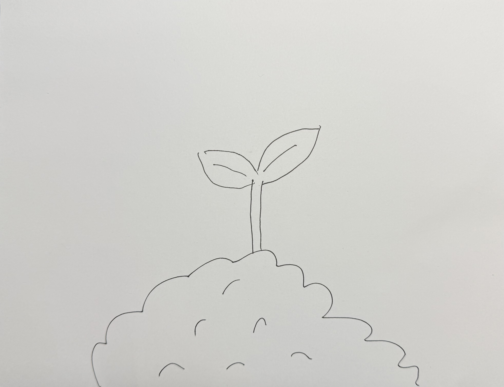
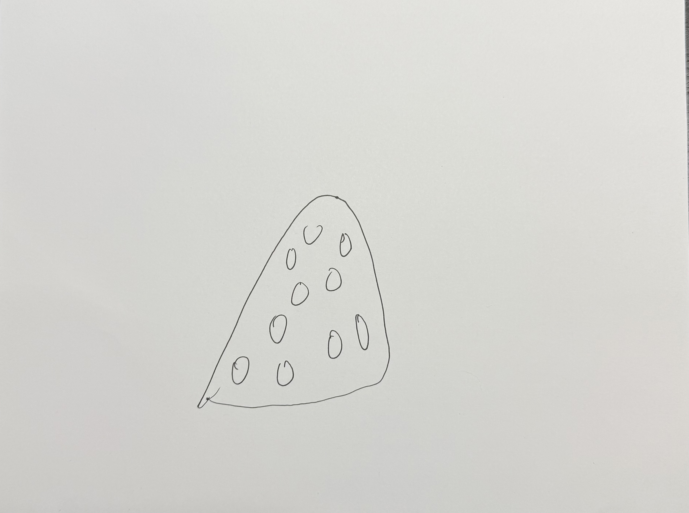
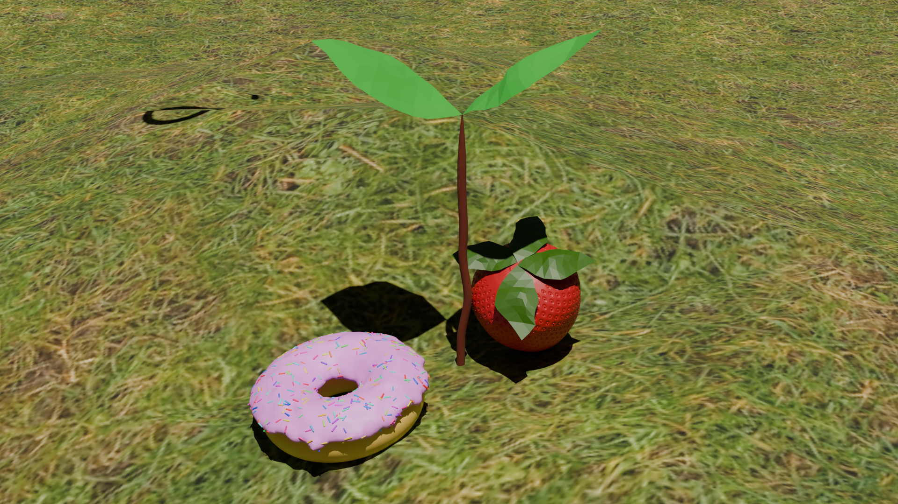

Class: GIXD503A | Week 4
Assignment: Create Three Objects in Blender
Angelo Outlaw
Create Three Objects in Blender
I created three objects modeled in Blender: a donut, a sprout, and a strawberry.
Sketches
For this assignment, I knew that I wanted to make a donut for one of my objects since it had been mentioned in class.
I wasn't sure about the other two objects, so I asked my daughter for ideas and she said I should create a sprouting plant and a strawberry. She then, very helpfully, drew some examples of how they should look. She was specific that the sprout should be coming out of the ground.


Process
This played nicely into one of my plans, which was to try and find/add a texture that I could add to one of my objects. I used the ground plane to add this texture to, and I found a nice grass texture to use.
The donut was a little more complicated than I planned, but I was able to use this YouTube video to follow along with how to make it.
Render Settings
- Render Engine: Cycles
- Device: GPU Compute
- Max Samples (render): 4096
- Denoise: Checked
- File Type: PNG
- Compression: None
Final render
The three finished objects, arranged together on a grass surface.
